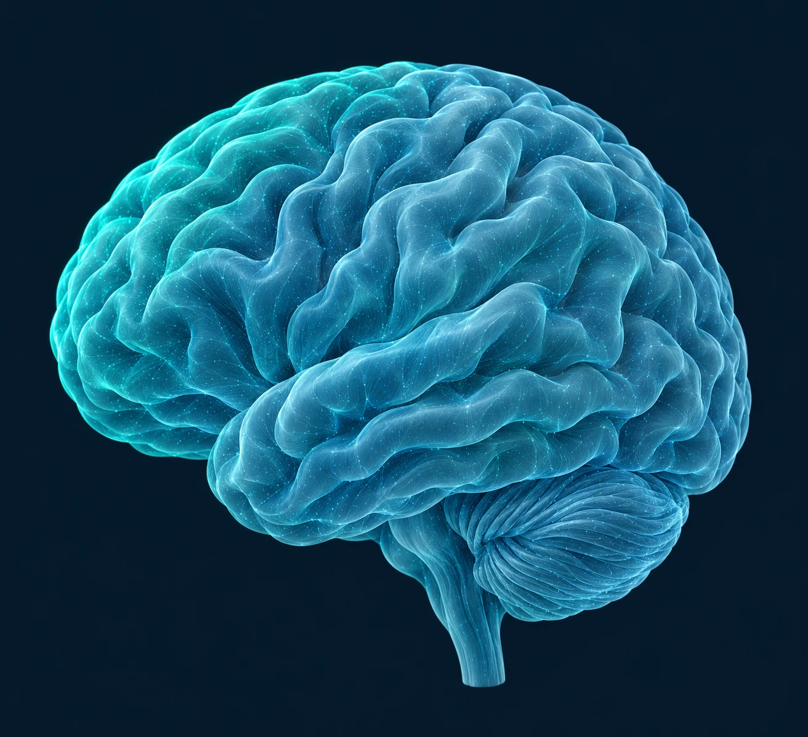

INPUT / 01LOCAL SESSION
MRI input
Drop your MRI image herePNG or JPEG · Up to 10 MiB
01 / Research interface
Upload a sample brain scan and explore how a trained neural network scores four MRI categories.
Analyze an MRI
Analysis workspace
Run a scan to see the leading class and its probability alongside the other three scores.
Processing your scan…
Educational and portfolio use only. Clinical decisions require a qualified medical professional.
Method
Choose a non-sensitive brain MRI image.
Validate the file and resize RGB pixels to 224 × 224.
Run the trained MobileNet classifier on the normalized image.
Review the probability assigned to each category.
The technology
A MobileNet backbone extracts image features. Global average pooling and dense layers convert those features into scores for glioma, meningioma, no tumor and pituitary.
The softmax outputs sum to one. They describe the model’s response to the image. Clinical accuracy and calibration have not been established.
Using NeuroScope
Choose a single PNG or JPEG up to 10 MiB and 16 million pixels. Grayscale and color images are supported. DICOM volumes are outside this workflow.
Each percentage is a class probability produced by the model. A high score can still be wrong.
The classifier can assign scores to any readable image. Use a brain MRI for a meaningful experiment.
The model classifies the whole image. It produces no segmentation mask or tumor location.
The selected image is processed locally in your browser and is not uploaded. Removing it or leaving this page clears the preview. Use only non-sensitive samples.
This portfolio system is for education and research. Consult a qualified clinician for diagnosis or treatment decisions.